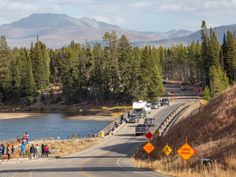
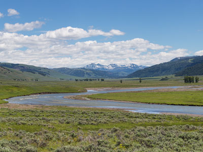
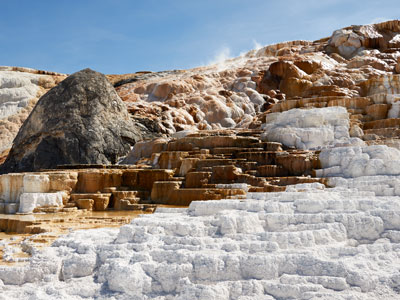
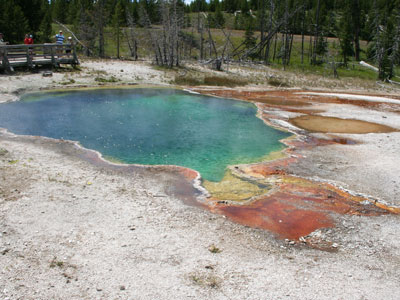
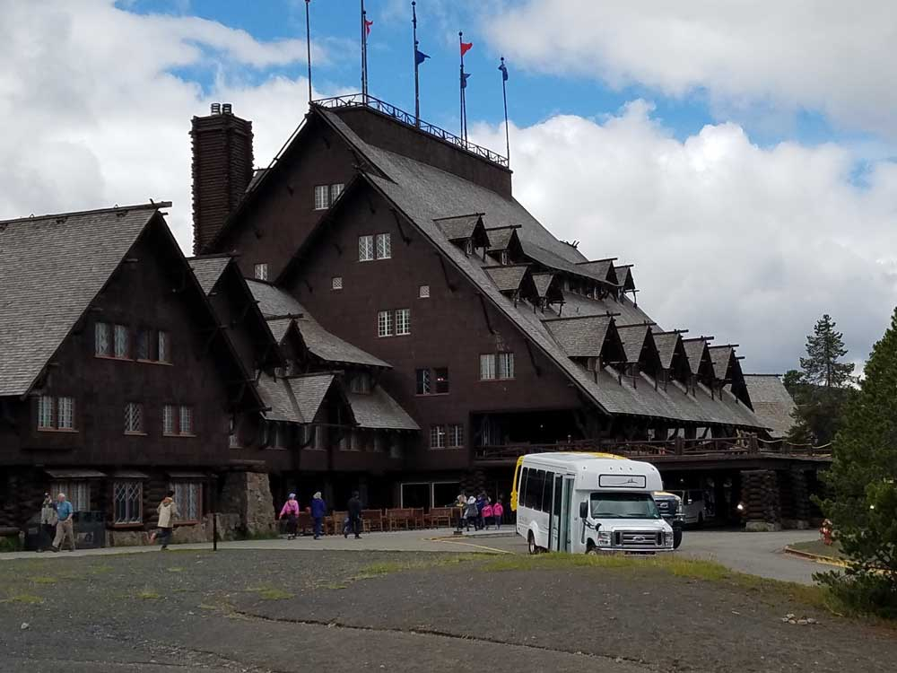
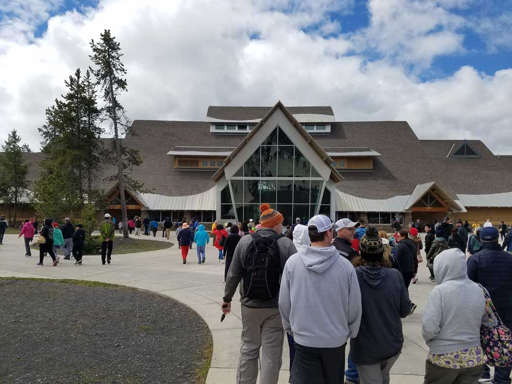
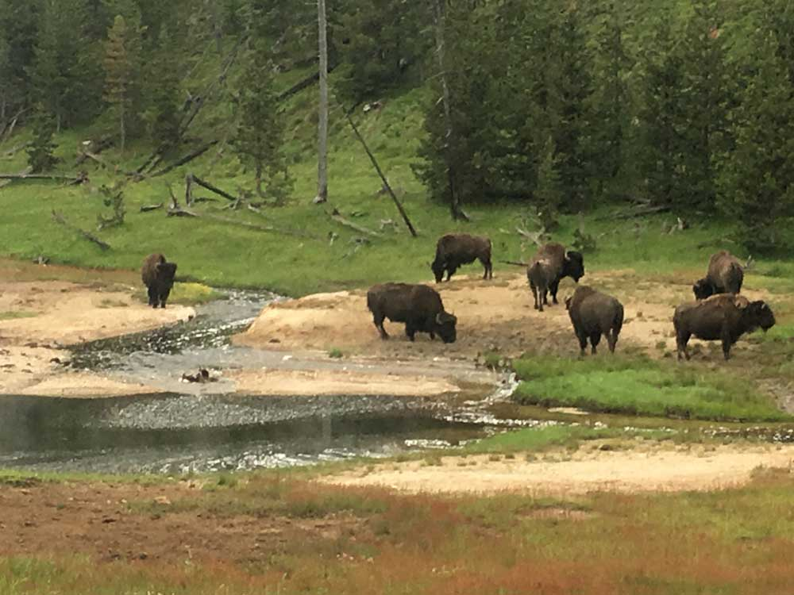

,_Old_Faithful_Geyser_--_2022_--_2592.jpg){kind=link}
Yellowstone National Park Travel Guide
The first national park in the U.S. and is also widely held to be the first national park in the world, the park is known for its wildlife and its many geothermal features, especially Old Faithful geyser
Some roads, facilities, and services close seasonally, especially during winter.
Motorcycle or Snowmobile (7-day pass): $30
Individual (on foot, bicycle, or ski; age 16+): $20
Children under 16: Free
Gardiner, MT (adjacent to north entrance)
Cody, WY (approximately 52 mi from east entrance)
Jackson, WY (approximately 57 mi from south entrance)
Peak season: June–August (full access and most services open).
Shoulder seasons: April–May and September–October (fewer crowds, variable weather).
Winter season: November–March (limited road access, snow-based recreation).
From Jackson, WY (128mi) Follow WY-22 W and ID-33 W to ID-32 in Teton County. Follow ID-32 to US-20 E in Ashton. Drive to US-191 S/US-20 E/US-287 S in Gallatin County
Overview
Yellowstone National Park lies mostly in northwestern Wyoming, with small parts in Montana and Idaho. Established on March 1, 1872, it was the world's first national park and covers 3,468 square miles, or about 2.2 million acres, of lakes, canyons, rivers, forests, and mountain ranges. It is known for more geysers and hot springs than anywhere else on Earth, about half of the world's geysers, which exist because the park sits on top of a huge volcanic caldera. It is also one of the best places in North America to see wildlife, including bison, elk, grizzly bears, and wolves.
Native Americans lived in the region for at least 11,000 years. Organized exploration began in the late 1860s, and the U.S. Army administered the park until the National Park Service took over in 1917. Yellowstone is a UNESCO World Heritage Site and an International Biosphere Reserve. Visitors come to watch Old Faithful erupt, see the colorful Grand Prismatic Spring, view the Grand Canyon of the Yellowstone and its waterfalls, and look for wildlife in Hayden and Lamar Valleys. It is one of the most popular national parks, receiving more than four million visitors a year.
Park Sections
The park is organized around the Grand Loop Road, a figure-eight route of about 142 miles that connects its main areas. In the southwest, the Old Faithful area has the largest concentration of geysers, and Madison and the West includes the Midway Geyser Basin and Grand Prismatic Spring. Norris Geyser Basin is the hottest and most active. Mammoth Hot Springs has terraces in the north, and the northeast has Tower Fall and the Lamar Valley. Canyon Village is near the Grand Canyon of the Yellowstone, and the east and south have Yellowstone Lake and West Thumb.
Sightseeing and Exploring the Park
Most sightseeing is along the Grand Loop Road. Highlights include Old Faithful, which erupts about every 90 minutes, the boardwalks of the Upper Geyser Basin, Grand Prismatic Spring, the Mammoth terraces, Steamboat Geyser, and Tower Fall. The Grand Canyon of the Yellowstone has two waterfalls, including the 308-foot Lower Falls, viewed from Artist Point and Lookout Point. Hayden Valley and the Lamar Valley are best for wildlife viewing. Because the park is large, drives between areas can take an hour or more, and wildlife jams slow traffic.
Hiking
Yellowstone has about 1,000 miles of trails. Easy walks include the boardwalks at the geyser basins, such as the Upper Geyser Basin loop at Old Faithful, and Mammoth Hot Springs terraces. The Grand Prismatic Overlook Trail (1.2 miles round trip) gives a view of the spring from above, and Fairy Falls (5 miles round trip) is a popular moderate hike. Mount Washburn (about 6.5 miles round trip) climbs to a fire lookout with views of the park, and the Storm Point and Elephant Back trails are shorter. The North Rim and South Rim trails follow the Grand Canyon. Stay on boardwalks in thermal areas, since the ground is thin and scalding, and carry bear spray on trails.
Other Activities
Beyond sightseeing and hiking, Yellowstone offers ranger programs, wildlife-watching tours, horseback rides, fishing (a permit is required and rules protect native trout), boating on Yellowstone Lake, bicycling, and educational programs from Yellowstone Forever. Concessioner tours include historic yellow bus tours, and guided sunrise and wildlife safaris in the Lamar Valley. In winter, the park is a destination for snowcoach and snowmobile tours and cross-country skiing, with guided trips to Old Faithful and the Grand Canyon. Camping, backpacking, and stargazing are also popular.
Flora and Wildlife
Yellowstone is one of the best places in the country for wildlife. Bison roam the Hayden and Lamar Valleys, and elk are common near Mammoth. Grizzly bears, black bears, and wolves, which were reintroduced in 1995, are best seen from a distance in the Lamar Valley at dawn and dusk. Other wildlife includes pronghorn, bighorn sheep, moose, coyotes, bald eagles, and trumpeter swans. Lodgepole pine forests cover much of the park, with wildflowers in meadows in summer. Stay at least 100 yards from bears and wolves and 25 yards from all other animals. Viewing is on your own, and guides can help.
Access
Yellowstone has five entrances. The West Entrance at West Yellowstone, Montana, is the busiest, and the North Entrance at Gardiner, Montana, is open to vehicles all year. The Northeast Entrance at Cooke City, Montana, is reached via the Beartooth Highway in summer, the East Entrance is about 53 miles from Cody, Wyoming, and the South Entrance is reached from Grand Teton National Park and Jackson. The closest commercial airports are Bozeman, Montana (about 90 miles), Jackson Hole, Cody, Idaho Falls, and Billings. Salt Lake City is about 5.5 hours from West Yellowstone. Most visitors drive.
Seasons
Most park roads are open to cars from about late April or May to early November, depending on snow. Summer, from June to August, is the busiest season, with crowds, parking problems at geyser basins, and afternoon thunderstorms. Spring and fall are quieter, with baby animals in spring and the elk rut and fall color in September and October. In winter the park is cold and snowy, and most roads close to regular vehicles; the road from the North Entrance through Mammoth to Cooke City remains open, and the rest of the park can be seen only by guided snowcoach or snowmobile. Check the National Park Service website for road openings.
Camping and Lodging
The park has 12 campgrounds, including Mammoth, Madison, Norris, Canyon, Bridge Bay, Grant Village, Slough Creek, and Pebble Creek, with many taking reservations. Backcountry camping requires a permit. Lodging inside the park includes the historic Old Faithful Inn, Old Faithful Snow Lodge, Lake Yellowstone Hotel, Canyon Lodge, Grant Village Lodge, Mammoth Hot Springs Hotel, and Roosevelt Lodge, many booking a year ahead. Gateway towns such as West Yellowstone, Gardiner, Cooke City, Cody, and Jackson have motels, hotels, and cabins, and Island Park, Idaho, is another option near the west.
Visitor Centers
Yellowstone has several visitor centers. The Old Faithful Visitor Education Center has exhibits on geysers and eruption predictions. The Albright Visitor Center at Mammoth Hot Springs is open year-round, the Canyon Visitor Education Center covers the volcano, and the Fishing Bridge Visitor Center has exhibits on the lake's wildlife. The Grant Visitor Center, the West Thumb Information Station, and the Norris Geyser Basin Museum are open seasonally. Hours vary by season, so check the National Park Service website.
Regions at a Glance
| Region | What to Expect |
|---|---|
| Old Faithful | Upper Geyser Basin boardwalks, Old Faithful, Grand Geyser, and Black Sand Basin |
| Madison and the West | Lower and Midway geyser basins, including Grand Prismatic Spring |
| Norris Geyser Basin | The hottest, most active basin, with Steamboat Geyser |
| Mammoth Hot Springs and the North | Terraces, Roosevelt Arch, and the year-round North Entrance |
| Lamar Valley and the Northeast | Wildlife viewing, Tower Fall, and Tower-Roosevelt |
| Canyon Village | The Grand Canyon of the Yellowstone and Hayden Valley |
| Yellowstone Lake and the East | Fishing Bridge, Lake Village, and Bridge Bay |
| West Thumb and the South | West Thumb Geyser Basin and Grant Village |
Good to Know
- Getting around: the Grand Loop Road connects the main areas, and roads close by winter, except the route from the North Entrance to Cooke City
- Wildlife safety: stay 100 yards from bears and wolves and 25 yards from all other animals
- Thermal areas: stay on boardwalks, since the ground is thin and scalding
- Best time: late spring through early fall, with fewer crowds in May and September
This article uses material from the Wikipedia articles "Yellowstone National Park", "Geothermal areas of Yellowstone", which are released under the Creative Commons Attribution-Share-Alike License 3.0. Additional information comes from the National Park Service Yellowstone National Park website.
Featured Regions

Erik Whalen, CC BY-SA 4.0, via Wikimedia Commons; Image Size Adjusted

Canyon Village and the Grand Canyon
Central visitor hub featuring lodging, dining, visitor services, campgrounds, and access to some of the park's most dramatic canyon and waterfall viewpoints.

Yellowstone National Park, Public domain, via Wikimedia Commons; Image Size Adjusted
.jpg){kind=link}
Fishing Bridge, Lake Village Bridge Bay, and the East
Historic fishing-area landmark featuring a wooden vehicle bridge spanning the Yellowstone River where waters flow out of Yellowstone Lake.

Yellowstone National Park, Public domain, via Wikimedia Commons; Image Size Adjusted
.jpg){kind=link}
Lamar Valley, the Northeast, Tower Fall, and Tower Roosevelt
Expansive grassland valley renowned for abundant wildlife viewing, including bison, wolves, bears, pronghorn, and elk.

Clément Bardot, CC BY-SA 3.0, via Wikimedia Commons; Image Size Adjusted

Madison and the West
Historic river junction area known for abundant wildlife, scenic meadows, geothermal features, and convenient access to major park attractions.

© Frank Schulenburg, CC BY-SA 4.0, via Wikimedia Commons; Image Size Adjusted

Mammoth Hot Springs and the North
Historic stone gateway providing year-round access to wildlife-rich valleys, geothermal features, and the park's northern road corridors.
Norris Geyser Basin
Hottest geyser basin in the park and is located near the northwest edge of Yellowstone Caldera near Norris Junction and on the intersection of three major faults.

Dietmar Rabich, CC BY-SA 4.0, via Wikimedia Commons; Image Size Adjusted
Old Faithful Historic District
Historic collection of rustic lodges, visitor facilities, and geothermal attractions centered around one of the world's most famous geysers.

Rik007, CC BY-SA 3.0, via Wikimedia Commons; Image Size Adjusted



